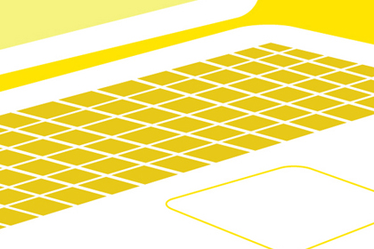

High Point University Libraries: Identity Marks
Part of my duties at HPU Libraries is to redesign the graphic look of the library's website. The first library logo is a stylized portico graphic and is representational of the entry way of the Smith Library. Although the graphic has been replaced by a new HPU Libraries logo, the portico graphic is still being used as a favicon on the library's website.
Spotlight Gallery:
Image 1 Image 2
{kind=link}
{kind=link}
Software: Illustrator &Photoshop
High Point University Libraries (2009-2010)
ASU Polytechnic: Student Union Banners
In 2004, while completing my Master's in Graphic Information Technology, I was asked to design a series of banners for the new Student Union building on Arizona State University's Polytechnic campus. Thematically, the banners were designed around a series of representational words that described what goes on within the student union.
Spotlight Gallery:
Image 1 Image 2
{kind=link}
{kind=link}
Software: Illustrator & Photoshop
Arizona State University Polytechnic (2004)
Edith Kruger Nye: Identity Marks
In 2004, I was asked to design promotional materials for local artist Edith Krueger-Nye. Ms. Krueger-Nye worked primarily as a photographer and wanted her lens-based approach to her art reflected in the graphics. A native of Germany, Ms Krueger-Nye's name originally featured the German umlaut. To both celebrate her nationality and to add visual interest, I recommended the bringing back the umlaut for these materials. The materials included two individual identity marks, postcards, business cards, and an exhibition brochure.
Spotlight Gallery:
Image 1 Image 2 Image 3
{kind=link}
{kind=link}
{kind=link}
Software: Illustrator, InDesign, & Photoshop
tvc15Media (2004)
Ashlee Weitlauf: Exhibition Poster
This exhibition poster was designed for artist Ashlee Weitlauf in 2004. The series of prints depicted in the poster were assembled using Ashlee's original digital images (the actual portfolio of eight prints was produced using a combination of photo lithography and letterpress printing). I digitally recreated the prints to look as though they were hanging on a studio drying line.
Spotlight Gallery:
Image 1
{kind=link}
Software: InDesign, Illustrator, & Photoshop
tvc15Media (2004)
tvc15Media: Identity Mark
I began designing websites in 1999 under the name of tvc15design using this stylized television graphic as my identity mark. Some people have said that it reminds them of the Tivo logo, to which I point out came well after I designed this one. Since I'm no longer doing websites or designing outside of my library job, I've put this graphic into semi-retirement with its only use being on my iTunes channel.
Spotlight Gallery:
Image 1
{kind=link}
Software: Illustrator
tvc15Media (1999)
Arizona Archives Online: Identity Mark
In 2006, I was asked to design an identity mark for Arizona Archives Online, a consortium of archival institutions including Arizona State University, Northern Arizona University, and the University of Arizona. I designed a series of five graphics with the final design being Image 2 below. I preferred the graphic in Image 1, of which there could be variations based on color preference.
Spotlight Gallery:
Image 1 Image 2
{kind=link}
{kind=link}
Software: Illustrator & Photoshop
tvc15Media (2006)